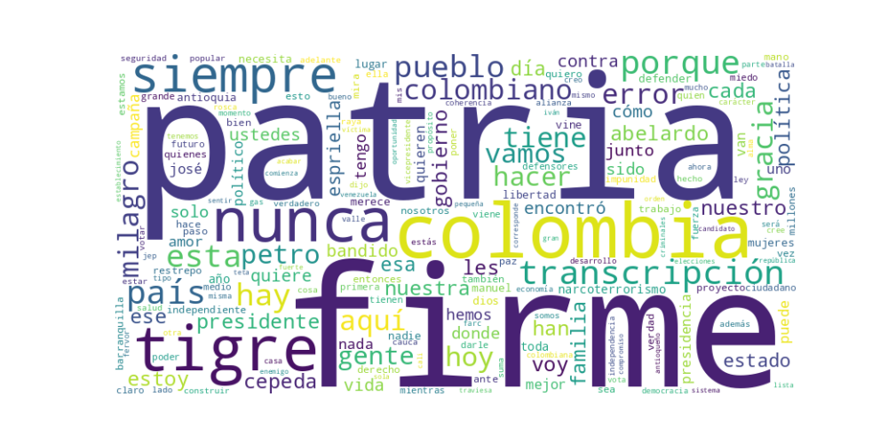

Seguidores: 1,093,439
Fecha de análisis: Mayo 2026 (Contexto electoral previo a primera vuelta presidencial)
El candidato emplea un estilo de comunicación predominantemente informal, cercano y visceral, dirigido a conectar emocionalmente con el ciudadano común. Combina un registro coloquial y popular ("vaina", "párenle bola", "cojones") con momentos de proclamación grandilocuente y épica. Se presenta como un hombre auténtico, alejado de los protocolos políticos tradicionales, utilizando anécdotas personales (su familia, sus perros), metáforas cotidianas (el vendedor de mangos) y un lenguaje directo, a veces confrontacional. Aunque es abogado, evita un lenguaje excesivamente técnico, salvo en contadas ocasiones, prefiriendo traducir problemas complejos (como el gas o el sistema financiero) a términos sencillos y comprensibles.
Lucha contra el Establecimiento/ "Los de Siempre": El eje central de su discurso. Se autodefine como un "outsider", "independiente" y parte de "los nunca" (quienes nunca han vivido del Estado, robado o hecho politiquería). Ejemplo: "Esta va a ser una batalla de los nunca contra los de siempre... Yo no pertenezco a la rosca política".
Seguridad y Orden Público ("Mano Dura"): Aborda la violencia de manera beligerante, prometiendo una respuesta estatal contundente. Ejemplo: "Declaro objetivo militar a todos esos bandidos... voy a hacer caer sobre ustedes todo el peso del Estado". Propone medidas como cadena perpetua para asesinos de niños, megacárceles y un combate sin tregua al "narcoterrorismo".
Salud Pública: Critica la gestión del gobierno saliente, presentando casos específicos de fallas en el sistema. Enmarca el acceso a la salud como un derecho, no un privilegio. Ejemplo: Relata el caso de una campesina sin medicamentos y promete "restableceré el sistema de salud para que deje de ser un privilegio y vuelva a ser una garantía real".
Soberanía Nacional y Política Exterior: Posiciona la defensa de la soberanía frente a Venezuela y el realineamiento con aliados tradicionales como Estados Unidos e Israel. Ejemplo: "Restablecer plenamente las relaciones con Estados Unidos es fundamental... No hipotecaremos nuestra independencia".
Economía Productiva y Campo: Promueve la producción nacional (gas, leche, flores), la reducción del Estado y de impuestos, y el apoyo al emprendimiento y al sector rural. Ejemplo: "Produciremos el gas que necesita el país y defenderemos la soberanía energética... industrializar el campo, organizarlo y convertir a nuestros campesinos en verdaderos empresarios".
El tono general es confrontacional y épico, con un sentimiento de cruzada nacional. Predomina la crítica feroz al gobierno de Gustavo Petro, a su "heredero" Iván Cepeda y a la "vieja política". Es un discurso de batalla, que busca movilizar a una base descontenta, combinando la denuncia de una crisis con una promesa de restauración basada en el carácter, la fe y la firmeza. Aunque hay momentos de calidez y cercanía (especialmente en publicaciones familiares), la urgencia y el combate definen la comunicación.
La estrategia de comunicación de Abelardo de la Espriella está diseñada para movilizar un voto de protesta, descontento y renovación radical. Se dirige a un electorado que percibe al establishment político (tanto oficialista como opositor tradicional) como corrupto, débil y parte del problema. Su discurso busca evocar orgullo nacional herido, un sentido de urgencia ante la crisis y la esperanza de una restauración basada en mano firme, valores tradicionales y un liderazgo carismático y ajeno al sistema. Se posiciona no como un político más, sino como el líder de un "movimiento popular" que es a la vez una causa patriótica y casi una misión espiritual ("con el favor del pueblo y la gracia de Dios"). La comunicación, agresiva en las formas pero cercana en el registro, busca capitalizar el malestar y convertirlo en una identidad política combativa y redentora.
Reporte Estratégico: Análisis del "Corpus del Éxito" - Comunicación Digital de Candidato Presidencial
1. Resumen del Patrón de Éxito: El patrón de éxito se basa en una comunicación maniquea y de confrontación directa, estructurada como un relato épico de lucha entre el "pueblo/movimiento" contra un "enemigo/establishment corrupto". Combina una retórica de guerra política (lucha, derrotar, enfrentar) con un tono de urgencia y ruptura ("se les acaba el tiempo", "la hora de la Patria Milagro"). No busca la persuasión racional clásica, sino la movilización emocional a través de la indignación, la esperanza de un cambio radical y la promesa de venganza o justicia contra los percibidos como opresores.
2. Tácticas de Comunicación Clave: * Enemigización y Confrontación Binaria: Es la táctica central. Define claramente un "ellos" (Petro, Cepeda, "los de siempre", la "rosca", el narcoterrorismo, la JEP) como la fuente de todos los males. Se posiciona a sí mismo como el único "nosotros" verdadero (el independiente, el outsider, el "Tigre") capaz de enfrentarlos. Esta dicotomía simplifica el mensaje y genera adhesión por oposición. * Apelación al Castigo y la Restauración del Orden: Evoca fuertemente la emoción del miedo (al caos, a la impunidad, a la pérdida de soberanía) para luego ofrecer como antídoto la promesa de mano firme (megacárceles, fin de la JEP, "justicia"). Combina lenguaje punitivo ("castigar al criminal", "que respondan") con una promesa de restauración casi mesiánica ("reconstruir la Nación", "Patria Milagro"). * Narrativa del Líder Mártir y Predestinado: Se presenta como víctima de una persecución ("interceptaciones ilegales", "sicariato digital", "amenazas sobre mi vida") pero también como el elegido para una misión histórica ("esta vez el pueblo está despierto", "el turno de los nunca"). Esta combinación genera identificación y lealtad inquebrantable en su base. * Llamados a la Acción Simbólicos y de Movilización: Sus "llamados a la acción" son más rituales de pertenencia que acciones concretas. Frases como "Firme por la Patria", "Ponle la raya al Tigre" o el uso de emojis específicos (🐅) actúan como slogans que unen a la comunidad digital y refuerzan la identidad del movimiento.
3. Temas de Mayor Resonancia: 1. Combate al "Narcoterrorismo" e Impunidad: El vínculo entre la guerrilla, el narcotráfico y el gobierno de Petro es el núcleo duro de su discurso. La promesa de acabar con la JEP y hacer justicia es recurrente y movilizadora. 2. Soberanía Nacional y Anti-Venezuelanismo: La defensa de la producción nacional (gas) y el rechazo a la influencia del régimen venezolano son presentados como temas de seguridad y orgullo nacional. 3. Antipolitiquería y "Los de Siempre": El rechazo visceral a los partidos tradicionales (Conservador, U, Liberal) y a las "alianzas por debajo de la mesa" resuena como un grito contra todo el establecimiento político. 4. Seguridad y Orden Público: Las promesas de megacárceles, "combate sin tregua" y la narrativa de caos actual generan una alta interacción.
4. Perfil de la Audiencia Implícita: El lenguaje apunta directamente a una audiencia de base movilizada y emocionalmente comprometida, no a indecisos o a sectores que buscan un debate técnico. El uso de términos coloquiales y combativos ("vaina", "no coman cuento", "bandidos", "rosca") busca conectar con un segmento que se siente traicionado por el sistema, desencantado con la política tradicional y con un fuerte deseo de castigo y renovación. Es un discurso para quienes ya simpatizan y necesitan ser galvanizados, más que para conversos nuevos.
5. Conclusión Estratégica: La clave fundamental de su poder discursivo es la transformación de la campaña política en un movimiento de cruzada moral. No vende políticas públicas; vende una identidad ("los nunca" vs. "los de siempre"), una misión (salvar la patria) y una catarsis colectiva (el ajusticiamiento político de los "culpables"). Su potencia radica en abandonar el lenguaje racional-complejo de la política tradicional y adoptar el lenguaje visceral y tribal de las redes sociales, donde la claridad emocional, la repetición de enemigos y la creación de una comunidad de creyentes ("Defensores de la Patria") generan un engagement muy superior al de un discurso técnico o conciliador. Es la politización del relato épico, adaptado a la economía de la atención digital.

Caption: Cuando recurren a interceptaciones ilegales, montajes judiciales, difamación y sicariato digital, es porque saben que se les acaba el tiempo. Le tienen miedo a un proyecto que no se arrodilla, que no negocia con la corrupción y que viene a poner orden de verdad. Miedo porque esta vez el pueblo está despierto, firme y decidido a cambiar el rumbo de Colombia. Aquí no hay discursos vacíos ni promesas recicladas. Hay carácter, hay decisión y hay una causa clara: derrotar a los de siempre, reconstruir la Nación y hacer que respondan quienes la han destruido. A Colombia le llegó la hora de la Patria Milagro. Firme por la Patria. 🫡🇨🇴🐅
Likes: 61,449 | Comentarios: 6,778 | Reproducciones: 473,228
Ver en InstagramCaption: Colombia ya conoce mi compromiso: construir 10 megacárceles para encerrar a los bandidos que atenten contra el pueblo colombiano. Ahí estarán quienes producen, venden y comercializan drogas, el cáncer que tiene al país sumido en esta crisis. Pero mientras esas megacárceles garantizan que paguen por el daño causado, en paralelo construiremos 10 megacentros de rehabilitación, con personal especializado y tecnología de última generación, para acompañar a quienes hoy luchan por salir de las adicciones. Porque no todos son lo mismo. Aquí se castiga al criminal… y se rescata al que quiere cambiar. La Patria Milagro que propongo es una Colombia con autoridad, pero también con humanidad: firme contra el delito, solidaria con quien lucha por levantarse. Yo creo en ellos. Creo en las familias que nunca abandonan. Creo que un verdadero líder es el que NUNCA deja solo a quien quiere salir adelante. Firme por la Patria. 🇨🇴🐅
Likes: 13,800 | Comentarios: 1,260 | Reproducciones: 109,647
Ver en InstagramCaption: ¡No coman cuento! A propósito de la importación de gas natural desde Venezuela, quiero decirles algo claro: producir nuestro propio gas genera empleo, impulsa el desarrollo y fortalece la economía de los colombianos. En mi gobierno produciremos el gas que necesita el país y defenderemos la soberanía energética nacional, como corresponde a una Colombia fuerte y con visión de futuro. Firme por la Patria. 🫡 (A.D.L.E) 🇨🇴🐅
Likes: 30,268 | Comentarios: 1,705 | Reproducciones: 241,440
Ver en Instagram